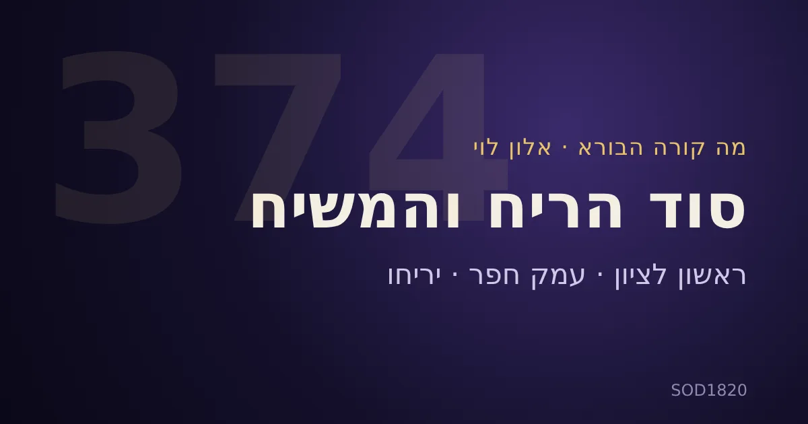

מה קורה הבורא · אלון לוי · כ־72 דקות · עברית · הסרטון והדברים שבו שייכים ליוצר
שני אירועי ריח חריגים בארץ, ובמקביל שמונה משפחות יהודיות מתחילות להתיישב בפאתי יריחו — מה הקשר בין הריח, יריחו והמשיח?
בשיעור מסדרת „מה קורה הבורא” אלון לוי פותח בשלושה דיווחים מן השבוע האחרון: מפגע ריח בראשון לציון, ריח שריפה ועשן באזור חדרה ועמק חפר, ודיווח על כניסת משפחות לבתים בפאתי יריחו. משם הוא בונה קריאה רוחנית אחת. אנחנו מציגים את קריאתו כפי שהיא, ומסמנים בנפרד מה נאמר בשיעור, מה נבדק במקורות חיצוניים ומה חושב במנוע הגימטריה של האתר.
הסיכום נכתב בפרפרזה על בסיס תקציר מתוזמן של השיעור. זה אינו תמלול מילולי ואינו ציטוט של דברי הדובר.
בשיעור:
„אני ה' בעתה אחישנה”
ישעיהו ס, כ״ב. אלון מפרש את שני המונחים כשני תהליכים: גאולה כללית שמגיעה בקצב הבורא, וגאולה פנימית שהאדם יכול להקדים בתפילה, באמונה ובקשר. בהמשך הוא מבחין בין משיח כמנהיג עתידי לבין ניצוץ משיחי פנימי בכל אדם. זו תפיסה רוחנית שלו, והיא מוצגת כך.
בדיקת המערכת: כל ביטוי חושב במנוע הגימטריה הקנוני, בשיטת רגיל (גרסה 1, fn_ragil), עם פירוט אותיות והתאמה לערך הקנוני. הכתיב המדויק מצוין, כי הכתיב משנה את הערך. הערך 374 משותף לשלושה ביטויים; זו זהות מספרית ואין בה הוכחה לסיבתיות.
| ביטוי (כתיב מחושב) | ערך | הערה |
|---|---|---|
| אחישנה | 374 | |
| זוג משיח | 374 | „משיח” לבדו = 358 |
| אשה הוא ליהוה | 374 | השם כתוב במלואו. הפסוק עצמו כתוב „לה'”, וכתיב זה נותן 353; „לאדני” נותן 413 |
| בעתה אחישנה | 851 | |
| יריחו | 234 | הרצף „ריח” (218) מופיע בתוכה |
| רוח | 214 | |
| חדרה / ה חדר | 217 | הפיצול „ה חדר” הוא דרשת הדובר |
| בכסף מלא | 233 | בראשית כג, ט |
| חיי שרה | 533 | |
| חשון (כתיב חסר) | 364 | כתיב „חשוון” נותן 370; כתיב ספר יצירה: חשון |
ערכים נוספים שהשיעור נשען עליהם: ראשון לציון 743, נחלת יהודה 518, ענב 122, כרם 260, גן עדן 177.
בשיעור: שמות כ״ט, כ״ה — „לריח ניחוח לפני ה' אשה הוא לה'”. אלון קושר את הריח, האש, אהבת הבורא והשכינה, ומשתמש בהשוואה ל־374 כרמז. בדיקת המערכת: הקשר המספרי מתקיים רק כשהשם נכתב במלואו, כמפורט בטבלה.
ראשון לציון. בשיעור: מפגע ריח חריף סביב 2.11.2026, ריח דלק או גז, פניות תושבים וחשד לשפיכה למערכת הביוב. בדיקת המערכת: כתבה ב־mako שפורסמה ב־2.11.2026 מדווחת על ריח חריף בראשון לציון, פניות תושבים, שתי נשים שפונו לבית החולים ואי־מציאת חומר מסוכן בבדיקות כבאות והצלה. מקור הריח לא נקבע בעת הפרסום.
חדרה ועמק חפר. בשיעור: עשן וריח שריפה ב־5.11.2026; משחקי לשון (ענבתא–ענב, טולכרם–כרם) ומשל הכרם של ישעיהו. בדיקת המערכת: כתבות מ־5.11.2026 ב־mako וב־מעריב מדווחות על ריח שריפה חריף בחדרה ובעמק חפר ועל הנחיה לסגור חלונות. לפי המשרד להגנת הסביבה המקור הוא שריפה בתחנת מעבר לפסולת באזור טולכרם, והרוח נשאה את העשן מערבה. השם „ענבתא” לא הופיע במקורות שנבדקו. המשל על הכרם הוא פרשנותו של הדובר, ואין בו קביעה שהשריפה היא עונש. במפגע אמיתי הדובר עצמו מדגיש שיש לפנות לגורמי הבטיחות.
בשיעור: כניסת שמונה משפחות לשמונה בתים בפאתי יריחו, ביוזמת תנועת נחלה והמועצה האזורית בנימין, והביטוי „בכסף מלא” כהקבלה לרכישת מערת המכפלה בפרשת חיי שרה (בראשית כ״ג, ט). הדובר קורא ליריחו שער הכניסה ההיסטורי של יהושע, ורואה בחידוש ההתיישבות סמל לתיקון.
בדיקת המערכת: כתבה ב־Jerusalem Post שפורסמה ב־5.11.2026 מדווחת שהכניסה לשמונה בתים בעין דיוק התחתא ליד יריחו התרחשה ביום רביעי, 4.11.2026, בתיאום עם המועצה האזורית בנימין ותנועת נחלה. לפי הכתבה, צה״ל מסר שהכניסה נעשתה ללא אישור וללא תיאום מוקדם, ו„שלום עכשיו” דיווחה על כ־30 מתיישבים ועל דיווחים לא מאומתים על אלימות. הבתים באזור C. תאריך האירוע הוא 4.11 ותאריך פרסום הכתבה הוא 5.11. הנושא שנוי במחלוקת פוליטית, ואנחנו מציגים את הדיווחים כפי שהם.
את שם העיר אלון קורא כ„יריחו”, והרצף „ריח” בתוכה משמש לו חוט מקשר בין האירועים. מבחינה לשונית זו עובדה על האותיות; הקשר המשמעותי הוא דרשה.
בשיעור: הפסוק שעליו נשען הקשר הוא ישעיהו י״א, ג: „והריחו ביראת ה'”, בפרק על חוטר מגזע ישי. אלון מפרש את הריח כחוש שפועל מעבר לראייה ולשמיעה, וקושר אותו לרוח, לחכמה ובינה ולמשיח. כך גם איכה ד, כ — „רוח אפינו משיח ה'” (בשיעור נאמר מראה מקום שגוי לרגע; המקור הנכון הוא איכה). בהמשך מוזכרים „ראשון לציון” (ישעיהו מ״א, כ״ז) ו„נחלת יהודה”.
בדיקת המערכת: הקשרים בין ריח, רוח ומשיח הם פרשנות של הדובר, והם אינם הוכחה לקשר בין האירועים.
| טענה בשיעור | מצב האימות |
|---|---|
| חוש הריח בחודש חשוון לפי ספר יצירה (29:00) | אומת מול הספר במערכת. בספר יצירה עם פירוש הגר״א (פרק ה) נכתב: „המליך אות נ׳ בריח וקשר לו כתר וצרפן זה בזה וצר בהם עקרב בעולם וחשון בשנה”. כלומר האות נ׳ היא חוש הריח והיא האות של חודש חשון. נקרא ישירות מסריקת הספר (עמ׳ 37 בדפוס, עמ׳ 189 בקובץ). נוסח זה תואם את נוסח הגר״א ב־Sefaria. נוסחים אחרים של הספר לא נבדקו. |
| ריח גן עדן בבגדי יעקב (30:59) | אומת. רש״י על בראשית כז, כז מביא את בראשית רבה סה, כב: „שנכנס עמו ריח גן עדן”. הפשט, למשל אצל אבן עזרא, הוא ריח שדה. |
| יצחק שלוש שנים בגן עדן אחרי העקידה, גיל 37 (32:20) | אומת כמסורת מדרשית. מדרש הגדול על בראשית כב, יט, ומובא גם בחזקוני. הגילאים 37 (עקידה) ו־40 (נישואין) הם חישוב כרונולוגי מקובל. אין זה אירוע היסטורי מאומת. |
| סיפור רבי מנחם מנדל מוויטבסק, ריח משיח בחדרו (1:00:36) | מסורת חסידית שלא אומתה במקור ראשוני. נמצא אזכור בקצרה באתר כיכר השבת בלבד. |
| עדות המיוחסת לרב דוד אבוחצירא על „משיח פה” (11:20) | לא אומת. לא נמצא סרטון או מקור ראשוני. הדובר עצמו מצטט עדות משנית מערוץ אחר. |
בשיעור: חלקו האחרון עוסק בפנימיות: האדם כצופה במציאות, „חדר ההקרנה הפנימי”, גן עדן כהגנה על העדינות, וחג הסיגד של יהדות אתיופיה. הדובר מציע נשימה מודעת, עירנות לריחות, אינטואיציה ותפילה כאהבה. אלה הצעות רוחניות, ולא הסבר מדעי לאירועי הריח.